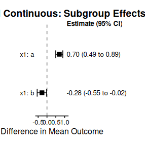
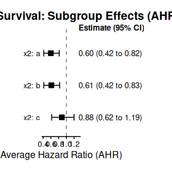

Advanced Functionalities
Miriam Pedrera Gomez, Isaac Gravestock, and Marcel Wolbers
Source:vignettes/Advanced_Functionalities.Rmd
Advanced_Functionalities.RmdThis vignette demonstrates advanced functionalities for Bayesian shrinkage estimation, including specifying an offset for count data, customizing prior distributions, and using stratification to handle heterogeneity in nuisance parameters.
1 Handling Exposure in Count Outcomes with Offsets
For count data (like disease exacerbations or event rates), the observed count often depends on the exposure time or follow-up time. Using an offset variable is the standard statistical method to properly account for this time variation by modeling the event rate (count per unit time) instead of the raw count.
In bonsaiforest2, you can include the offset directly in the response_formula using the standard brms syntax: count + offset(log_fup_duration) ~ trt.
1.1 Example 1: Count Outcome with Offset (Disease Exacerbations)
This scenario models exacerbation counts using a Negative Binomial distribution and explicitly accounts for the patient’s follow-up duration.
Scenario: Modeling count outcomes with exposure-time adjustment using the shrink_data dataset. Adjust for x1 (unshrunk prognostic effect) and x2, x3 (shrunk prognostic effects). Overall treatment effect on the rate scale.
# Load data and prepare offset variable
library(bonsaiforest2)
shrink_data <- bonsaiforest2::shrink_data
# Add log follow-up duration as the offset (accounts for varying exposure time)
shrink_data$log_fup_duration <- log(shrink_data$fup_duration)
count_data <- shrink_data
# Model Fitting with Offset
count_model_fit <- run_brms_analysis(
data = count_data,
# Include offset(log_fup_duration) directly in the response formula
response_formula = count + offset(log_fup_duration) ~ trt,
response_type = "count",
unshrunk_terms_formula = ~ x1,
shrunk_prognostic_formula = ~ 0 + x2 + x3,
intercept_prior = "normal(0, 5)",
unshrunk_prior = "normal(0, 2.5)",
shrunk_prognostic_prior = "horseshoe(scale_global = 1)",
shrunk_predictive_prior = "horseshoe(scale_global = 1)",
chains = 2, iter = 1000, warmup = 500, cores = 2, refresh = 0, backend = "cmdstanr"
)
#> Step 1: Preparing formula and data...
#>
#> Step 2: Fitting the brms model...
#> Fitting brms model...
#> Start sampling
#> Running MCMC with 2 parallel chains...
#>
#> Chain 1 finished in 2.6 seconds.
#> Chain 2 finished in 2.7 seconds.
#>
#> Both chains finished successfully.
#> Mean chain execution time: 2.6 seconds.
#> Total execution time: 2.8 seconds.
#> Warning: 6 of 1000 (1.0%) transitions ended with a divergence.
#> See https://mc-stan.org/misc/warnings for details.
#> Loading required namespace: rstan
#>
#> Analysis complete.2 Customizing Prior Distributions
The choice of prior is central to Bayesian shrinkage. bonsaiforest2 provides sensible defaults, but it allows for full customization using dedicated prior arguments: intercept_prior, unshrunk_prior, shrunk_prognostic_prior, and shrunk_predictive_prior.
2.1 Prior Specification Mechanics
Priors are specified using separate parameters for each component.
| Prior Component | Parameter Name | Default Prior | Notes |
|---|---|---|---|
| Intercept | intercept_prior |
NULL (brms default) |
Optional custom prior |
| Unshrunk Terms | unshrunk_prior |
NULL (brms default) |
Optional custom prior |
| Shrunk Prognostic | shrunk_prognostic_prior |
horseshoe(scale_global = 1) |
Strong shrinkage for fixed effects (colon syntax); For random effects (pipe-pipe syntax), automatically uses normal(0, 1) on SD scale |
| Shrunk Predictive | shrunk_predictive_prior |
horseshoe(scale_global = 1) |
Strong shrinkage for fixed effects (colon syntax); For random effects (pipe-pipe syntax), can be specified via set_prior("normal(0, 1)", class = "sd")
|
2.2 Practical Examples of Prior Setting
The following examples demonstrate how to customize priors using the new API. We use the shrink_data package dataset with a time-to-event outcome to show different prior specification strategies, from simple defaults to advanced hierarchical structures.
2.2.1 Dataset Preparation
# Load library
library(bonsaiforest2)
# 1. Load the shrink_data package dataset
shrink_data <- bonsaiforest2::shrink_data
sim_data <- shrink_data
# Ensure trt is a factor with expected levels
sim_data$trt <- factor(sim_data$trt, levels = c(0, 1))
# 2. Prepare the model formula
prepared_model <- prepare_formula_model(
data = sim_data,
response_formula = Surv(tt_event, event_yn) ~ trt,
shrunk_predictive_formula = ~ 0 + trt:x1,
unshrunk_terms_formula = ~ x2,
response_type = "survival"
)
#> Response type is 'survival'. Modeling the baseline hazard explicitly using bhaz().
#> Note: Marginality principle not followed - interaction term 'x1' is used without its main effect. Consider adding 'x1' to prognostic terms for proper model hierarchy.2.2.2 Example 2: Using Default Priors
The simplest approach: use the package defaults that adapt to your outcome type (horseshoe(1) for shrunk effects, brms defaults for others).
fit_ex3 <- fit_brms_model(
prepared_model = prepared_model,
intercept_prior = "normal(0, 5)",
unshrunk_prior = "normal(0, 2.5)",
shrunk_prognostic_prior = "horseshoe(scale_global = 1)",
shrunk_predictive_prior = "horseshoe(scale_global = 1)",
chains = 2, iter = 1000, warmup = 500, cores = 2, refresh = 0, backend = "cmdstanr"
)
#> Fitting brms model...
#> Start sampling
#> Running MCMC with 2 parallel chains...
#>
#> Chain 1 finished in 3.6 seconds.
#> Chain 2 finished in 4.5 seconds.
#>
#> Both chains finished successfully.
#> Mean chain execution time: 4.0 seconds.
#> Total execution time: 4.6 seconds.
#> Warning: 1 of 1000 (0.0%) transitions ended with a divergence.
#> See https://mc-stan.org/misc/warnings for details.
# View the priors that were automatically set
cat("\n=== Priors Used ===\n")
#>
#> === Priors Used ===
print(fit_ex3[["prior"]])
#> prior class coef group resp dpar nlpar
#> horseshoe(scale_global = 1) b shpredeffect
#> horseshoe(scale_global = 1) b trt:x1a shpredeffect
#> horseshoe(scale_global = 1) b trt:x1b shpredeffect
#> normal(0, 2.5) b unshrunktermeffect
#> normal(0, 2.5) b trt unshrunktermeffect
#> normal(0, 2.5) b x2a unshrunktermeffect
#> normal(0, 2.5) b x2b unshrunktermeffect
#> normal(0, 2.5) b x2c unshrunktermeffect
#> dirichlet(1) sbhaz
#> lb ub tag source
#> user
#> (vectorized)
#> (vectorized)
#> user
#> (vectorized)
#> (vectorized)
#> (vectorized)
#> (vectorized)
#> default2.2.3 Example 3: Using the R2D2 Shrinkage Prior
The R2D2 prior is useful when you want to control the global shrinkage via the coefficient of determination (\(R^2\)) rather than a scale parameter. This is often more interpretable for stakeholders.
# Use a custom R2D2 prior for the shrunk predictive effects (interactions)
fit_ex4 <- fit_brms_model(
prepared_model = prepared_model,
intercept_prior = "normal(0, 5)",
unshrunk_prior = "normal(0, 2.5)",
shrunk_prognostic_prior = "horseshoe(scale_global = 1)",
shrunk_predictive_prior = "R2D2(mean_R2 = 0.5, prec_R2 = 1)",
chains = 2, iter = 1000, warmup = 500, cores = 2, refresh = 0, backend = "cmdstanr"
)
#> Fitting brms model...
#> Start sampling
#> Running MCMC with 2 parallel chains...
#>
#> Chain 1 finished in 3.2 seconds.
#> Chain 2 finished in 3.2 seconds.
#>
#> Both chains finished successfully.
#> Mean chain execution time: 3.2 seconds.
#> Total execution time: 3.3 seconds.
#> Warning: 5 of 1000 (0.0%) transitions ended with a divergence.
#> See https://mc-stan.org/misc/warnings for details.
cat("\n=== Priors Used ===\n")
#>
#> === Priors Used ===
print(fit_ex4[["prior"]])
#> prior class coef group resp dpar
#> R2D2(mean_R2 = 0.5, prec_R2 = 1) b
#> R2D2(mean_R2 = 0.5, prec_R2 = 1) b trt:x1a
#> R2D2(mean_R2 = 0.5, prec_R2 = 1) b trt:x1b
#> normal(0, 2.5) b
#> normal(0, 2.5) b trt
#> normal(0, 2.5) b x2a
#> normal(0, 2.5) b x2b
#> normal(0, 2.5) b x2c
#> dirichlet(1) sbhaz
#> nlpar lb ub tag source
#> shpredeffect user
#> shpredeffect (vectorized)
#> shpredeffect (vectorized)
#> unshrunktermeffect user
#> unshrunktermeffect (vectorized)
#> unshrunktermeffect (vectorized)
#> unshrunktermeffect (vectorized)
#> unshrunktermeffect (vectorized)
#> default2.2.4 Example 4: Custom Hierarchical Prior (Advanced)
This example demonstrates injecting raw Stan code using stanvars. This is necessary if you want to implement a hierarchical structure that brms does not support natively, such as estimating a shared variance parameter across coefficients.
# 1. Define new hyperparameters in Stan
stanvars_full_hierarchical <- brms::stanvar(
scode = " real mu_pred;\n real<lower=0> sigma_pred;\n",
block = "parameters"
) +
# Add priors for these parameters
brms::stanvar(
scode = " // Priors on the hierarchical parameters\n target += normal_lpdf(mu_pred | 0, 4); \n target += normal_lpdf(sigma_pred | 0, 1) - normal_lccdf(0 | 0, 1); \n",
block = "model"
)
# 2. Create prior that references the Stan variables
prior_full_hierarchical <- brms::set_prior("normal(mu_pred, sigma_pred)")
# 3. Pass both to fit_brms_model
fit_ex5 <- fit_brms_model(
prepared_model = prepared_model,
intercept_prior = "normal(0, 5)",
unshrunk_prior = "normal(0, 2.5)",
shrunk_prognostic_prior = "horseshoe(scale_global = 1)",
shrunk_predictive_prior = prior_full_hierarchical,
stanvars = stanvars_full_hierarchical,
chains = 2, iter = 1000, warmup = 500, cores = 2, refresh = 0, backend = "cmdstanr"
)
#> Fitting brms model...
#> Start sampling
#> Running MCMC with 2 parallel chains...
#>
#> Chain 1 finished in 4.8 seconds.
#> Chain 2 finished in 5.3 seconds.
#>
#> Both chains finished successfully.
#> Mean chain execution time: 5.1 seconds.
#> Total execution time: 5.3 seconds.
# View the used priors
cat("\n=== Priors Used ===\n")
#>
#> === Priors Used ===
print(fit_ex5[["prior"]])
#> prior class coef group resp dpar nlpar
#> normal(mu_pred, sigma_pred) b shpredeffect
#> normal(mu_pred, sigma_pred) b trt:x1a shpredeffect
#> normal(mu_pred, sigma_pred) b trt:x1b shpredeffect
#> normal(0, 2.5) b unshrunktermeffect
#> normal(0, 2.5) b trt unshrunktermeffect
#> normal(0, 2.5) b x2a unshrunktermeffect
#> normal(0, 2.5) b x2b unshrunktermeffect
#> normal(0, 2.5) b x2c unshrunktermeffect
#> dirichlet(1) sbhaz
#> lb ub tag source
#> user
#> (vectorized)
#> (vectorized)
#> user
#> (vectorized)
#> (vectorized)
#> (vectorized)
#> (vectorized)
#> default
print(fit_ex5[["stanvars"]])
#> [[1]]
#> [[1]]$name
#> [1] ""
#>
#> [[1]]$sdata
#> NULL
#>
#> [[1]]$scode
#> [1] " real mu_pred;\n real<lower=0> sigma_pred;\n"
#>
#> [[1]]$block
#> [1] "parameters"
#>
#> [[1]]$position
#> [1] "start"
#>
#> [[1]]$pll_args
#> character(0)
#>
#>
#> [[2]]
#> [[2]]$name
#> [1] ""
#>
#> [[2]]$sdata
#> NULL
#>
#> [[2]]$scode
#> [1] " // Priors on the hierarchical parameters\n target += normal_lpdf(mu_pred | 0, 4); \n target += normal_lpdf(sigma_pred | 0, 1) - normal_lccdf(0 | 0, 1); \n"
#>
#> [[2]]$block
#> [1] "model"
#>
#> [[2]]$position
#> [1] "start"
#>
#> [[2]]$pll_args
#> character(0)
#>
#>
#> attr(,"class")
#> [1] "stanvars"2.2.5 Example 5: Coefficient-Specific Priors
You can set different priors for specific coefficients by passing a brmsprior object (created with c()).
Scenario: Set a general prior for all unshrunk terms, but use a tighter prior specifically for treatment-subgroup interactions.
Key Technique: Use prepare_formula_model() to discover the exact coefficient names that will appear in the model.
# 1. Run prepare_formula_model
prepared_model <- prepare_formula_model(
data = sim_data,
response_formula = Surv(tt_event, event_yn) ~ trt,
shrunk_predictive_formula = ~ 0 + trt:x1,
unshrunk_terms_formula = ~ x2 + trt*x3,
response_type = "survival"
)
#> Response type is 'survival'. Modeling the baseline hazard explicitly using bhaz().
#> Note: Marginality principle not followed - interaction term 'x1' is used without its main effect. Consider adding 'x1' to prognostic terms for proper model hierarchy.
# 2. Inspect the Results
# A. The generated brms formula object
print(prepared_model$formula)
#> tt_event | cens(1 - event_yn) + bhaz(Boundary.knots = c(0, 60.500476574435), knots = c(14.0610682872923, 36.1959635027271, 46.047044984117), intercept = FALSE) ~ unshrunktermeffect + shpredeffect
#> unshrunktermeffect ~ 0 + x2 + trt * x3 + trt
#> shpredeffect ~ 0 + trt:x1
# B. The processed terms
print(prepared_model$stan_variable_names$X_unshrunktermeffect)
#> [1] "x2a" "x2b" "x2c" "trt" "x3b" "x3c" "x3d"
#> [8] "trt:x3b" "trt:x3c" "trt:x3d"
cat("=== Prior Strategy ===\n")
#> === Prior Strategy ===
cat("General unshrunk prior: normal(0, 5)\n")
#> General unshrunk prior: normal(0, 5)
cat("Specific for trt:x3 interactions: normal(0, 1)\n\n")
#> Specific for trt:x3 interactions: normal(0, 1)
# Create combined prior object
# IMPORTANT: Use EXACT coefficient names from the prepared data
unshrunk_priors_combined <- c(
brms::set_prior("normal(0, 5)", class = "b"), # General
brms::set_prior("normal(0, 1)", class = "b", coef = "trt:x3b"),
brms::set_prior("normal(0, 1)", class = "b", coef = "trt:x3c"),
brms::set_prior("normal(0, 1)", class = "b", coef = "trt:x3d")
)
# Fit the model
fit_specific <- fit_brms_model(
prepared_model = prepared_model,
intercept_prior = "normal(0, 5)",
unshrunk_prior = unshrunk_priors_combined, # Pass the combined object
shrunk_prognostic_prior = "horseshoe(scale_global = 1)",
shrunk_predictive_prior = "horseshoe(scale_global = 1)",
chains = 2, iter = 1000, warmup = 500, cores = 2, refresh = 0, backend = "cmdstanr"
)
#> Fitting brms model...
#> Start sampling
#> Running MCMC with 2 parallel chains...
#>
#> Chain 1 finished in 4.5 seconds.
#> Chain 2 finished in 4.7 seconds.
#>
#> Both chains finished successfully.
#> Mean chain execution time: 4.6 seconds.
#> Total execution time: 4.8 seconds.
#> Warning: 2 of 1000 (0.0%) transitions ended with a divergence.
#> See https://mc-stan.org/misc/warnings for details.
# View the used priors
cat("\n=== Priors Used ===\n")
#>
#> === Priors Used ===
print(fit_specific[["prior"]])
#> prior class coef group resp dpar nlpar
#> horseshoe(scale_global = 1) b shpredeffect
#> horseshoe(scale_global = 1) b trt:x1a shpredeffect
#> horseshoe(scale_global = 1) b trt:x1b shpredeffect
#> normal(0, 5) b unshrunktermeffect
#> normal(0, 5) b trt unshrunktermeffect
#> normal(0, 1) b trt:x3b unshrunktermeffect
#> normal(0, 1) b trt:x3c unshrunktermeffect
#> normal(0, 1) b trt:x3d unshrunktermeffect
#> normal(0, 5) b x2a unshrunktermeffect
#> normal(0, 5) b x2b unshrunktermeffect
#> normal(0, 5) b x2c unshrunktermeffect
#> normal(0, 5) b x3b unshrunktermeffect
#> normal(0, 5) b x3c unshrunktermeffect
#> normal(0, 5) b x3d unshrunktermeffect
#> dirichlet(1) sbhaz
#> lb ub tag source
#> user
#> (vectorized)
#> (vectorized)
#> user
#> (vectorized)
#> user
#> user
#> user
#> (vectorized)
#> (vectorized)
#> (vectorized)
#> (vectorized)
#> (vectorized)
#> (vectorized)
#> default2.2.6 Example 6: Hierarchical Priors with Shared Variance (stanvars)
Create correlated priors by sharing a common variance parameter estimated from the data.
Use case: When you believe treatment effects across subgroups should be exchangeable, you can pool information by giving them a shared variance.
cat("\n=== Hierarchical Prior Structure ===\n")
#>
#> === Hierarchical Prior Structure ===
cat("Instead of independent priors per coefficient, we pool information through a shared scale:\n")
#> Instead of independent priors per coefficient, we pool information through a shared scale:
cat(" tau ~ half-normal(0, 1) [shared scale parameter]\n")
#> tau ~ half-normal(0, 1) [shared scale parameter]
cat(" beta_i ~ N(0, tau) for each coefficient i\n")
#> beta_i ~ N(0, tau) for each coefficient i
cat("This creates exchangeability: coefficients are ~similar but with adaptive variation.\n\n")
#> This creates exchangeability: coefficients are ~similar but with adaptive variation.
# Step 1: Declare tau as a parameter to be estimated
tau_parameter <- brms::stanvar(
scode = " real<lower=0> biomarker_tau; // Shared scale parameter\n",
block = "parameters"
)
# Step 2: Add prior for tau (using normal truncated to positive values with constraint)
tau_prior <- brms::stanvar(
scode = " biomarker_tau ~ normal(0, 1); // Hyperprior on the scale\n",
block = "model"
)
# Combine stanvars
hierarchical_stanvars <- tau_parameter + tau_prior
# Step 3: Create priors referencing the shared variance parameter
# Note: We identified these coefficient names using prepare_formula_model above
unshrunk_priors_hier <- c(
brms::set_prior("normal(0, 5)", class = "b"), # General
brms::set_prior("normal(0, biomarker_tau)", class = "b", coef = "trt:x3b"),
brms::set_prior("normal(0, biomarker_tau)", class = "b", coef = "trt:x3c"),
brms::set_prior("normal(0, biomarker_tau)", class = "b", coef = "trt:x3d")
)
# Step 4: Fit the hierarchical model
fit_hier <- fit_brms_model(
prepared_model = prepared_model,
intercept_prior = "normal(0, 5)",
unshrunk_prior = unshrunk_priors_hier,
shrunk_prognostic_prior = "horseshoe(scale_global = 1)",
shrunk_predictive_prior = "horseshoe(scale_global = 1)",
stanvars = hierarchical_stanvars,
chains = 2, iter = 1000, warmup = 500, cores = 2, refresh = 0, backend = "cmdstanr"
)
# View the used priors
cat("\n=== Priors Used ===\n")
print(fit_hier[["prior"]])
print(fit_hier[["stanvars"]])3 Advanced Model Parameterization
This section demonstrates advanced features for controlling how your model represents subgroups.
3.1 Example 7: Custom Contrast Encoding for Shrunk Terms
By default, bonsaiforest2 uses one-hot encoding (all factor levels, no reference category) for shrunk interaction terms specified with ~ 0 + ... syntax, enabling full hierarchical shrinkage of all levels. For unshrunk terms, treatment contrasts (k-1 dummy variables with a reference level) are used by default. However, you can manually set custom contrasts in your data using contrasts(), and the library will preserve your choice throughout the analysis.
Scenario: You want to use custom contrast coding for subgroup variables, such as Helmert contrasts or sum contrasts, instead of the default treatment contrasts. This is useful for specific hypothesis structures or when comparing non-orthogonal effects.
Key Technique: Set contrasts using contrasts() before calling prepare_formula_model(). The library will preserve your choice.
# Use the shrink_data dataset
shrink_data <- bonsaiforest2::shrink_data
sample_data_contrast <- shrink_data
# Set Helmert contrasts for the x2 variable (3 levels: a, b, c)
contrasts(sample_data_contrast$x2) <- contr.helmert(3)
cat("Contrast matrix for x2:\n")
#> Contrast matrix for x2:
print(contrasts(sample_data_contrast$x2))
#> [,1] [,2]
#> a -1 -1
#> b 1 -1
#> c 0 2
# Prepare model
prepared_custom_contrast <- prepare_formula_model(
data = sample_data_contrast,
response_formula = y ~ trt,
shrunk_predictive_formula = ~ 0 + trt:x2,
response_type = "continuous"
)
#> Note: Marginality principle not followed - interaction term 'x2' is used without its main effect. Consider adding 'x2' to prognostic terms for proper model hierarchy.
# Observe custom contrast in the data
str(prepared_custom_contrast$data)
#> 'data.frame': 500 obs. of 11 variables:
#> $ id : int 1 2 3 4 5 6 7 8 9 10 ...
#> $ trt : num 0 1 1 0 1 1 0 0 0 1 ...
#> $ x1 : Factor w/ 2 levels "a","b": 1 2 1 2 1 2 1 1 1 1 ...
#> $ x2 : Factor w/ 3 levels "a","b","c": 2 3 2 2 2 2 3 3 2 1 ...
#> ..- attr(*, "contrasts")= num [1:3, 1:2] -1 1 0 -1 -1 2
#> .. ..- attr(*, "dimnames")=List of 2
#> .. .. ..$ : chr [1:3] "a" "b" "c"
#> .. .. ..$ : NULL
#> $ x3 : Factor w/ 4 levels "a","b","c","d": 2 4 4 4 3 1 4 4 1 4 ...
#> $ y : num 5.86 4.46 6.38 5 5.65 ...
#> $ response : num 0 0 1 0 0 0 1 0 0 1 ...
#> $ tt_event : num 22.9 49.1 59.9 21.3 59.8 ...
#> $ event_yn : num 1 0 0 1 0 1 0 1 1 0 ...
#> $ fup_duration: num 24 24 24 24 24 24 24 24 24 24 ...
#> $ count : int 1 0 2 1 1 0 0 0 0 1 ...
# Fit the model
fit_custom_contrast <- fit_brms_model(
prepared_model = prepared_custom_contrast,
intercept_prior = "normal(0, 5)",
unshrunk_prior = "normal(0, 2.5)",
shrunk_prognostic_prior = "horseshoe(scale_global = 1)",
shrunk_predictive_prior = "horseshoe(scale_global = 1)",
chains = 2, iter = 1000, warmup = 500, cores = 2, refresh = 0, backend = "cmdstanr"
)
#> Fitting brms model...
#> Start sampling
#> Running MCMC with 2 parallel chains...
#>
#> Chain 2 finished in 1.1 seconds.
#> Chain 1 finished in 1.3 seconds.
#>
#> Both chains finished successfully.
#> Mean chain execution time: 1.2 seconds.
#> Total execution time: 1.4 seconds.
#> Warning: 2 of 1000 (0.0%) transitions ended with a divergence.
#> See https://mc-stan.org/misc/warnings for details.
estimate_custom_contrast <- summary_subgroup_effects(fit_custom_contrast)
#> --- Calculating specific subgroup effects... ---
#> Step 1: Identifying subgroups and creating counterfactuals...
#> ...detected subgroup variable(s): x2
#> Step 2: Generating posterior predictions...
#> Step 3: Calculating marginal effects...
#> Done.
print(estimate_custom_contrast)
#> $estimates
#> # A tibble: 3 × 4
#> Subgroup Median CI_Lower CI_Upper
#> <chr> <dbl> <dbl> <dbl>
#> 1 x2: a 0.378 0.153 0.655
#> 2 x2: b 0.441 0.203 0.731
#> 3 x2: c 0.282 -0.000312 0.550
#>
#> $response_type
#> [1] "continuous"
#>
#> $ci_level
#> [1] 0.95
#>
#> $trt_var
#> [1] "trt"
#>
#> attr(,"class")
#> [1] "subgroup_summary"3.2 Example 8: Prediction on New Data
After fitting a model, you can use brms::predict() to generate predictions for new patients.
Scenario: We’ve fitted a treatment effect model and want to predict outcomes for new patients with different characteristics.
# Use the fitted model from Example 7
# Generate new data for prediction
set.seed(789)
new_patients <- data.frame(
id = 1:20,
trt = rep(0:1, length.out = 20),
x2 = factor(rep(c("a", "b", "c"), length.out = 20), levels = c("a", "b", "c"))
)
# IMPORTANT: Set the same contrasts as in Example 7
# The prediction data must use the same encoding as the training data
contrasts(new_patients$x2) <- contr.helmert(3)
# Prepare new data
prepared_custom_contrast <- prepare_formula_model(
data = new_patients,
response_formula = y ~ trt,
shrunk_predictive_formula = ~ 0 + trt:x2,
response_type = "continuous"
)
#> Note: Marginality principle not followed - interaction term 'x2' is used without its main effect. Consider adding 'x2' to prognostic terms for proper model hierarchy.
#> Warning: Could not extract Stan variable names. Error: The following variables can neither be found in 'data' nor in 'data2':
#> 'y'
# Generate predictions using brms::predict
# This returns posterior predictive samples
predictions <- predict(fit_custom_contrast, newdata = prepared_custom_contrast$data, summary = TRUE)
head(predictions)
#> Estimate Est.Error Q2.5 Q97.5
#> [1,] 5.419561 1.125105 3.165091 7.515665
#> [2,] 5.862782 1.084850 3.807817 8.040690
#> [3,] 5.414205 1.087779 3.365337 7.651618
#> [4,] 5.841834 1.154566 3.590417 8.100206
#> [5,] 5.487413 1.111793 3.242018 7.568826
#> [6,] 5.731516 1.115848 3.411121 7.9194694 Stratification for Nuisance Parameters
In many trials, parameters like the observation error variance (\(\sigma^2\) for continuous outcomes) or the baseline hazard function (\(h_0(t)\) for survival outcomes) are known to vary by site, country, or other factors. Stratification models this known heterogeneity by fitting these nuisance parameters separately for each level of a grouping variable.
Use the stratification_formula argument to define the grouping factor(s).
4.1 Example 9: Stratified Continuous Model
Scenario: We model outcomes where the observation error standard deviation \(\sigma\) differs by site. Stratification uses brms distributional formulas to estimate separate residual variance parameters for each site, allowing for heterogeneity in measurement noise or outcome variability across sites.
shrink_data <- bonsaiforest2::shrink_data
set.seed(42)
# Add a site variable based on x3 subgroup levels
sample_data_strat_cont <- shrink_data
sample_data_strat_cont$site <- factor(
ifelse(shrink_data$x3 %in% c("a", "b"), "A",
ifelse(shrink_data$x3 == "c", "B", "C"))
)
# Model Fitting with Stratified Model
fit_continuous_stratified <- run_brms_analysis(
data = sample_data_strat_cont,
response_formula = y ~ trt,
response_type = "continuous",
shrunk_predictive_formula = ~ 0 + trt:x1,
stratification_formula = ~ site,
intercept_prior = "normal(0, 5)",
shrunk_prognostic_prior = "horseshoe(scale_global = 1)",
shrunk_predictive_prior = "horseshoe(scale_global = 1)",
chains = 2, iter = 1000, warmup = 500, cores = 2, refresh = 0, backend = "cmdstanr"
)
#> Step 1: Preparing formula and data...
#> Applying stratification: estimating sigma by 'site'.
#> Note: Marginality principle not followed - interaction term 'x1' is used without its main effect. Consider adding 'x1' to prognostic terms for proper model hierarchy.
#>
#> Step 2: Fitting the brms model...
#> Using default priors for unspecified effects:
#> - unshrunk terms: brms default
#> Fitting brms model...
#> Start sampling
#> Running MCMC with 2 parallel chains...
#>
#> Chain 2 finished in 4.1 seconds.
#> Chain 1 finished in 4.4 seconds.
#>
#> Both chains finished successfully.
#> Mean chain execution time: 4.3 seconds.
#> Total execution time: 4.5 seconds.
#> Warning: 5 of 1000 (0.0%) transitions ended with a divergence.
#> See https://mc-stan.org/misc/warnings for details.
#>
#> Analysis complete.
strat_continuous_summary <- summary_subgroup_effects(
brms_fit = fit_continuous_stratified
# All parameters automatically extracted!
)
#> --- Calculating specific subgroup effects... ---
#> Step 1: Identifying subgroups and creating counterfactuals...
#> ...detected subgroup variable(s): x1
#> Step 2: Generating posterior predictions...
#> Step 3: Calculating marginal effects...
#> Done.
print(strat_continuous_summary$estimates)
#> # A tibble: 2 × 4
#> Subgroup Median CI_Lower CI_Upper
#> <chr> <dbl> <dbl> <dbl>
#> 1 x1: a 0.697 0.495 0.894
#> 2 x1: b -0.284 -0.555 -0.0206
plot(strat_continuous_summary, title = "Stratified Continuous: Subgroup Effects")
#> Preparing data for plotting...
#> Generating plot...
#> Done.
4.2 Example 10: Stratified Survival Model
Scenario: We model a time-to-event outcome with stratified baseline hazard by country using a piecewise exponential model. Stratification via stratification_formula = ~ country allows the baseline hazard to differ by country, accommodating regional differences in baseline risk or standard of care.
shrink_data <- bonsaiforest2::shrink_data
set.seed(123)
# Add a country variable derived from x1 levels
surv_data_strat <- shrink_data
surv_data_strat$country <- factor(ifelse(shrink_data$x1 == "a", "A", "B"))
surv_data_strat$trt <- factor(surv_data_strat$trt, levels = c(0, 1))
# Model Fitting with Stratified Baseline Hazard
fit_surv_stratified <- run_brms_analysis(
data = surv_data_strat,
response_formula = Surv(tt_event, event_yn) ~ trt,
response_type = "survival",
shrunk_predictive_formula = ~ 0 + trt:x2,
stratification_formula = ~ country,
intercept_prior = "normal(0, 5)",
shrunk_prognostic_prior = "horseshoe(scale_global = 1)",
shrunk_predictive_prior = "horseshoe(scale_global = 1)",
chains = 2, iter = 1000, warmup = 500, cores = 2, refresh = 0, backend = "cmdstanr"
)
#> Step 1: Preparing formula and data...
#> Response type is 'survival'. Modeling the baseline hazard explicitly using bhaz().
#> Applying stratification: estimating separate baseline hazards by 'country'.
#> Note: Marginality principle not followed - interaction term 'x2' is used without its main effect. Consider adding 'x2' to prognostic terms for proper model hierarchy.
#>
#> Step 2: Fitting the brms model...
#> Using default priors for unspecified effects:
#> - unshrunk terms: brms default
#> Fitting brms model...
#> Start sampling
#> Running MCMC with 2 parallel chains...
#>
#> Chain 2 finished in 4.1 seconds.
#> Chain 1 finished in 4.8 seconds.
#>
#> Both chains finished successfully.
#> Mean chain execution time: 4.5 seconds.
#> Total execution time: 4.9 seconds.
#>
#> Analysis complete.
strat_surv_summary <- summary_subgroup_effects(
brms_fit = fit_surv_stratified
# All parameters automatically extracted!
)
#> --- Calculating specific subgroup effects... ---
#> Step 1: Identifying subgroups and creating counterfactuals...
#> ...detected subgroup variable(s): x2
#> Step 2: Generating posterior predictions...
#> Warning: Dropping 'draws_df' class as required metadata was removed.
#> Warning: Dropping 'draws_df' class as required metadata was removed.
#> Step 3: Calculating marginal effects...
#> Done.
print(strat_surv_summary$estimates)
#> # A tibble: 3 × 4
#> Subgroup Median CI_Lower CI_Upper
#> <chr> <dbl> <dbl> <dbl>
#> 1 x2: a 0.598 0.416 0.815
#> 2 x2: b 0.611 0.418 0.826
#> 3 x2: c 0.881 0.619 1.19
plot(strat_surv_summary, title = "Stratified Survival: Subgroup Effects (AHR)")
#> Preparing data for plotting...
#> Generating plot...
#> Done.
5 Summary
This vignette demonstrated advanced functionalities in bonsaiforest2:
- Offset variables for count outcomes with varying exposure times
- Custom prior specification with flexible prior constraints
- One-hot encoding for full factor representation in interactions
- Coefficient-specific priors for fine-grained control
-
Hierarchical priors with shared variance using
stanvars - Stratification for nuisance parameters that vary by groups
These features provide researchers with powerful tools for complex trial analyses while maintaining the principled Bayesian shrinkage framework.